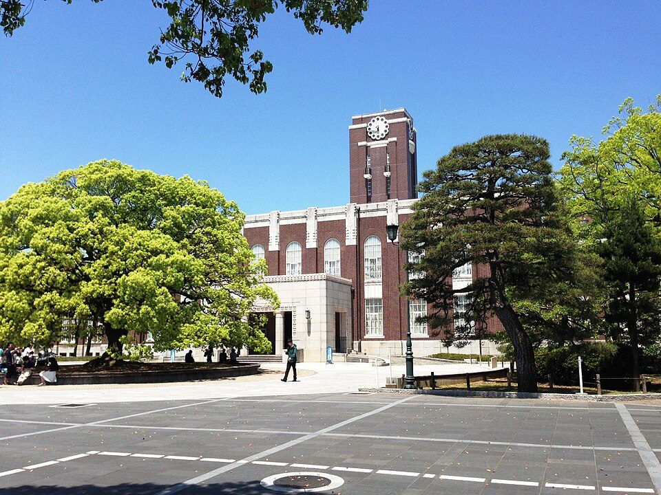
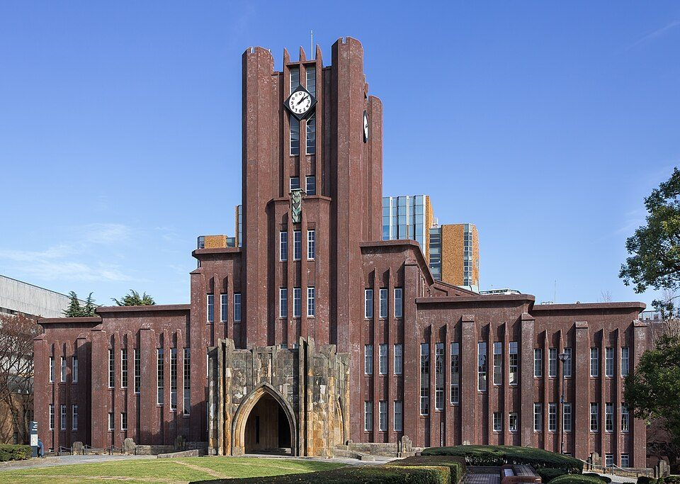

社会人でも参加できる大学の公開講座：5つの学び方の違い、費用の例、探し方（2026年版）
要点まとめ
大学は、学生だけでなく、働いている人にも学びの場を開いています。1回だけ聞きに行ける講座から、証明書や単位がもらえるものまで、形はさまざまです。この記事では、社会人が大学で学ぶ方法の違いと、実際の講座の料金・形式、探し方を、文部科学省の資料と大学の公式ページでまとめました。放送大学については放送大学で学生身分を得る、給付金のくわしい受け取り方は教育訓練給付の対象講座と受け取り方にまとめています。

大学で学ぶ5つの入口
| 方法 | 単位 | もらえるもの | 長さの目安 |
|---|---|---|---|
| 公開講座 | なし | 修了の条件はない（大学によって受講証書） | 1回から |
| 履修証明プログラム | 出ることもある | 学校教育法にもとづく履修証明書 | 60時間以上 |
| 科目等履修生 | 正規の単位 | 大学が定める証明書 | 1科目から |
| 職業実践力育成プログラム（BP） | 課程による | 文部科学大臣が認定した課程の修了 | 短いものは60時間以上 |
| 大学院などへの入学 | 正規の単位 | 学位 | 1〜2年以上 |
出典: [2][7][8][5]。公開講座は、大学の教育や研究の成果を地域の人などに開いて学ぶ機会をつくるもので、単位は出ません[2]。科目等履修生は、正規の授業を1科目から受けて、正規の単位を取れます[2]。
履修証明プログラムは、60時間以上のまとまった講座
2019年4月から、時間の条件が120時間以上から60時間以上に
履修証明プログラムは、大学が社会人などに向けて開くまとまった講座で、修了すると学校教育法にもとづく履修証明書がもらえます[2]。時間の条件は、2019年4月1日以降に始まるプログラムから、120時間以上から60時間以上に短くなりました[7]。単位が出るプログラムもあります[7]。
BPは、働く人向けに国が認定した課程
2025年12月に67課程が認定され、累計は496課程
職業実践力育成プログラム（BP）は、大学などの正規の課程や履修証明プログラムのうち、社会人向けの実践的な内容を文部科学大臣が認定したものです[8]。授業時間の5割以上を目安に、実務家の教員や討論などのうち2つ以上の方法で行うことなどが条件です[8]。2025年12月19日に67課程が認定され、累計は496課程になりました[9][8]。
数字で見る、大学の学び直し
公開講座は、9割近くの大学が開いている
公開講座は22,507講座。受講者は約93万人
2026年11月6日に公表された文部科学省の調査では、2024年度に公開講座を開いた大学は692大学で、講座の数は22,507、受講者は934,183人（うち社会人665,788人）でした[1]。履修証明プログラムの受講者は18,288人で、10,098人に証明書が出ています[1]。
実際の講座の例
| 講座 | 形式 | 料金 | 日程・募集 |
|---|---|---|---|
| 京都大学「京大知の森」（第7回） | 対面、270名、抽選 | 無料 | 12月6日。申込は11月13日23時59分まで[3] |
| 東京大学 第143回公開講座 | 対面（安田講堂）、1000名。オンライン配信なし | 各日3,000円 | 11月14日・12月5日。各講義日の16時まで受付[4] |
| 大阪大学 第58回公開講座 | 会場（中之島センター）とオンデマンド配信 | 全10講義7,700円、1講義1,600円 | 2026年9月28日から全10回[5] |
| 神戸大学 DX専門講座「生成AI活用ハンズオン」 | eラーニング（15時間） | 30,000円 | 募集は11月30日まで[10] |
| 慶應丸の内シティキャンパス（agora）の講座 | 会場とZoom、25名 | 115,500円（税込） | 2027年1〜4月に全6回。定員に達し募集終了[11] |
| 京都大学の科目等履修生 | 正規の授業 | 1単位14,800円、ほかに入学料28,200円と検定料9,800円 | 大学の募集時期による[12] |
慶應以外の料金は、税込かどうかの記載がありません。神戸大学の講座は、修了すると修了証がもらえます[10]。大阪大学は、全10講義を受講してアンケートに答えた人に受講証書を出します[5]。

無料で、オンラインで学ぶなら
JMOOCやgaccoは、大学などの講座を無料で受けられる
JMOOCは、日本最大級の無料オンライン講座の仕組みです[13]。JMOOCが公認するgaccoは、会員登録が無料です[14]。京都大学の京大知の森も、後日オンデマンドで配信される予定です[3]。
講座の探し方
- 手順1
文部科学省の「マナパス」で、分野や目的から探す
大学などの講座や支援制度を、学び直したい社会人に向けて紹介するサイト[15]
- 手順2
気になる大学の「公開講座」「社会人の学び」のページを見る
大阪大学は「21世紀懐徳堂」で公開講座をまとめて案内している[5]
- 手順3
給付金を使いたいなら、厚生労働省の検索システムで講座名を調べる
学校名・講座名・分野で検索できる[16]
お金の支援
教育訓練給付は、最大で費用の80%
専門実践教育訓練の対象3,485講座のうち、大学のBPは242講座
雇用保険の教育訓練給付のうち、専門実践教育訓練給付は、条件を満たすと受講費用の最大80%が支給されます[17]。2026年10月1日時点の対象は3,485講座で、そのうち大学などの職業実践力育成プログラムが242講座です[6]。BPがすべて給付の対象とは限らないので、講座ごとに検索システムで確かめます（筆者の見解）[16]。
会社が費用を出す場合は、人材開発支援助成金
会社が社員に訓練を受けさせると、経費の一部が助成される
人材開発支援助成金は、会社が社員に職業訓練などを受けさせたときに、訓練の経費や訓練中の賃金の一部を助成する国の制度です[18]。会社に、学び直しの支援制度があるかを確かめる価値があります（筆者の見解）。
今回確認できなかった点
- 早稲田大学エクステンションセンターの料金と日程（公式サイトに接続できなかった）
- 横浜国立大学の2026年度の一般向け公開講座の内容
- 聴講生の制度についての文部科学省の説明
- マナパスとJMOOCに載っている講座の数
- 人材開発支援助成金の助成率と上限額
出典（18件）
閲覧日はいずれも2026年11月9日
- 大学における教育内容等の改革状況について（令和6年度）（2026年11月6日）（文部科学省）
- 大学・大学院における社会人等の学修機会の充実に係る制度等（文部科学省）
- 京大知の森（第7回）（京都大学）
- 2026年秋季・第143回東京大学公開講座（東京大学）
- 第58回大阪大学公開講座（大阪大学21世紀懐徳堂）
- 専門実践教育訓練の指定講座を公表しました（令和8年10月1日付指定）（厚生労働省）
- 大学等の履修証明制度について（文部科学省）
- 職業実践力育成プログラム（BP）認定制度について（概要、2025年12月）（文部科学省）
- 令和7年度「職業実践力育成プログラム」（BP）の認定について（2025年12月19日）（文部科学省）
- DX専門講座【⑧生成AI活用ハンズオン】（神戸大学 数理・データサイエンスセンター）
- 宮城まり子さんとこころの旅（慶應丸の内シティキャンパス（agora））
- 授業料等（2026年度）（京都大学）
- JMOOC（日本オープンオンライン教育推進協議会）
- gacco トップページ（gacco）
- マナパス（社会人の学びを応援するポータルサイト）サイトについて（文部科学省）
- 教育訓練給付金 検索システム（厚生労働省）
- 教育訓練給付金（厚生労働省（ハローワークインターネットサービス））
- 人材開発支援助成金（厚生労働省）
写真・画像の出典（3件）
- 京都大学の時計台
写真: Soraie8288／Wikimedia Commons（CC BY-SA 4.0） - 東京大学の安田講堂
写真: Kakidai／Wikimedia Commons（CC BY-SA 4.0） - 大阪大学中之島センター
写真: KishujiRapid／Wikimedia Commons（CC BY-SA 4.0）